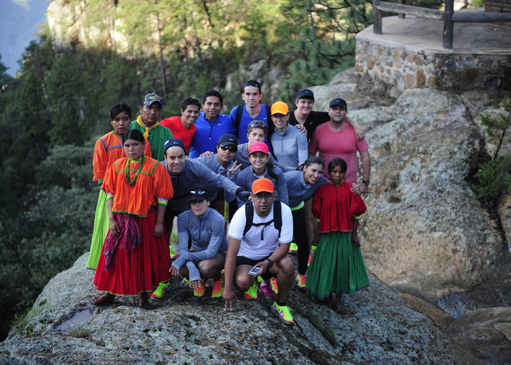
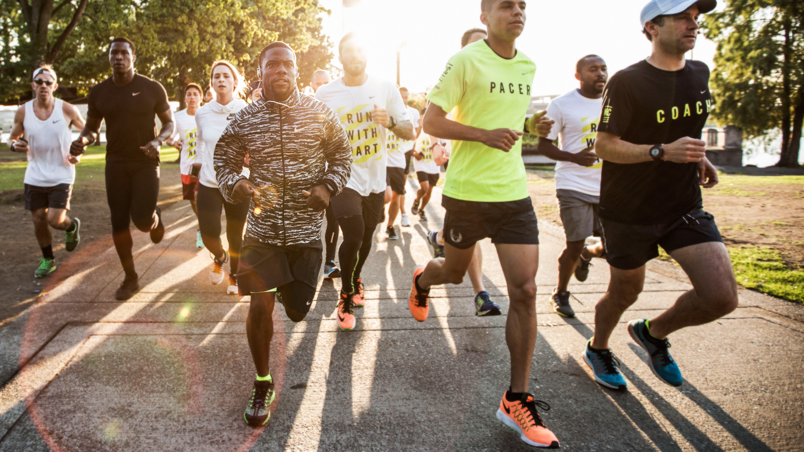

Nike siempre apoya a los deportistas de todo el mundo. Sabe que los más importante es cumplir con tus sueños...con tus metas. Por eso diseñamos nuestros productos para ayudate a llegar a donde nadie más lo hizo. Uniendo culturas y valores al rededor de todo el mundo.
A fin de demostrar el poder de una forma de correr más natural, Nike de México organizó una expedición con medios, referentes y atletas para visitar a la tribu Raramuris en Sierra Tarahumara, una cultura aborigen milenaria conocida, entre otras cosas, por su afición a correr descalzos.
La experiencia comenzó en Guachochi, Chihuahua, uno de los poblados más emblemáticos de la cultura Raramuris. Allí Arnulfo Quimare y Antonio Luna –dos referentes de la tribu—compartieron las tradiciones y los beneficios de una corrida más natural
La expedición culminó con una carrera de 6-millas en Barranca de la Sinforosa, la ruta que los Tarahumaras recorren en sus tradicionales fondos de entre 10- a 50-millas. Los corredores probaron los nuevos calzados de Nike en este circuito, mientras disfrutaron de las increíbles vistas de Barrancas del Cobre, en Chihuahua.
Las Nike Free Flyknit unen dos de las tecnologías de Nike más innovadoras y populares para ofrecer una flexibilidad similar a correr descalzo y un calce y compresión que contiene al pie en su lugar.
|  |  |